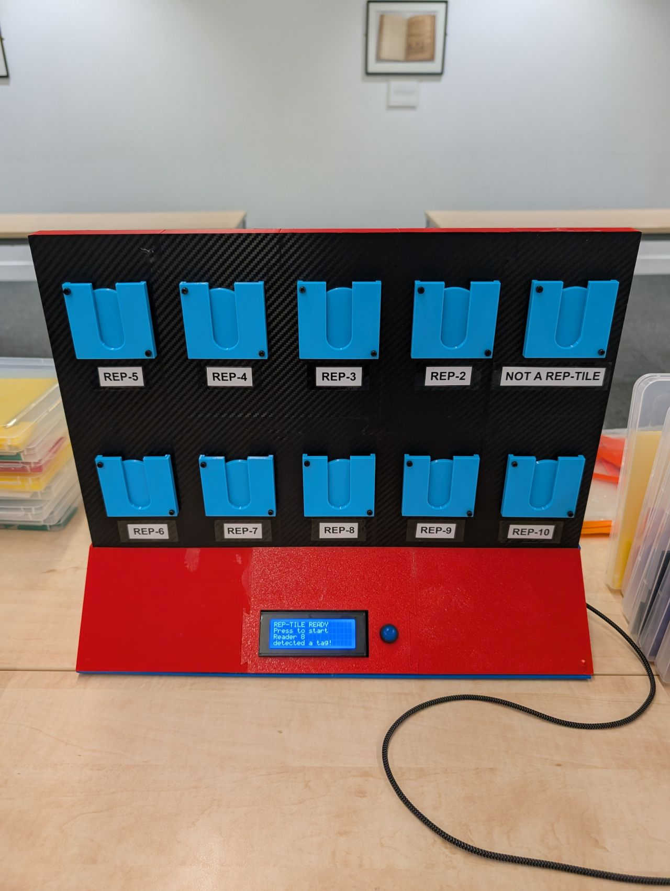

The physical Rep-Tile device is designed as a standalone educational gaming console. Built around an ESP32 microcontroller, it coordinates multiple custom components, wireless readers, dual displays, sound feedback, and a unified state management button to enable active gameplay.
The unit is housed in a custom CAD-designed, 3D-printed chassis. It supports physical wooden player mats, custom laser-cut tile sets, and smart RFID game tokens that register inputs instantly.

Under the hood, Rep-Tile coordinates several distinct electronics modules over I2C and SPI buses to manage wireless tags and gameplay states.
Download the CAD models and the Arduino firmware used to drive the Rep-Tile project.
Download and slice the custom enclosure components:
Arduino sketch and custom PN532 library source files:
Follow these instructions to source, print, assemble, and program your own Rep-Tile game unit.
Adafruit_PN532.cpp and Adafruit_PN532.h from the Downloads card into your local Arduino libraries folder. Open rep-tile_lcd.ino and upload it to the ESP32.
notareptile) using your computer or phone. Open your browser and navigate to http://192.168.4.1. Toggle write mode in the panel, select Blue/Red, and tap the blank RFID tags against the physical readers to program the player tokens.